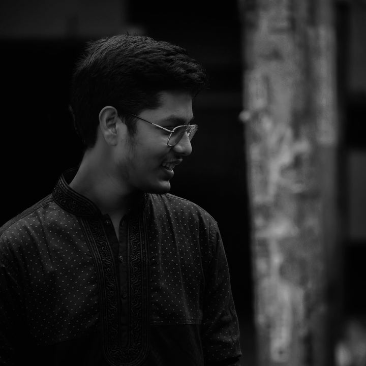

Undergraduate cybersecurity researcher
Department of CSE, IIUC, since 2025. Working on security research and preparing manuscripts to IEEE standards.
Computer Science & Engineering student
I build across software, AI, cybersecurity and embedded hardware, from ML pipelines to stepper-driven machines.

I'm a Computer Science & Engineering student at International Islamic University Chittagong. My work sits where software meets the physical world: web development, machine learning, cybersecurity, and hardware that moves, senses and draws.
Alongside coursework I'm drawn to research in AI and security, and I like projects where I can wire a circuit, flash the firmware and see the result on a desk.
Technologies I'm working with.
Hands-on hardware builds, with software projects joining soon.
Currently involved in multiple research projects, including three manuscripts under peer review and one ongoing research project.
Department of CSE, IIUC, since 2025. Working on security research and preparing manuscripts to IEEE standards.
Organized several local community events, including Pujo: managed the budget, led teams of youth volunteers and kept each event running smoothly.
International Islamic University Chittagong (IIUC), Bangladesh
A one-page CV with my education, research experience, projects and skills.
Open to internships, research collaborations and software projects. Email me or tap Contact me for more ways to reach me.
Pick the channel that suits you.